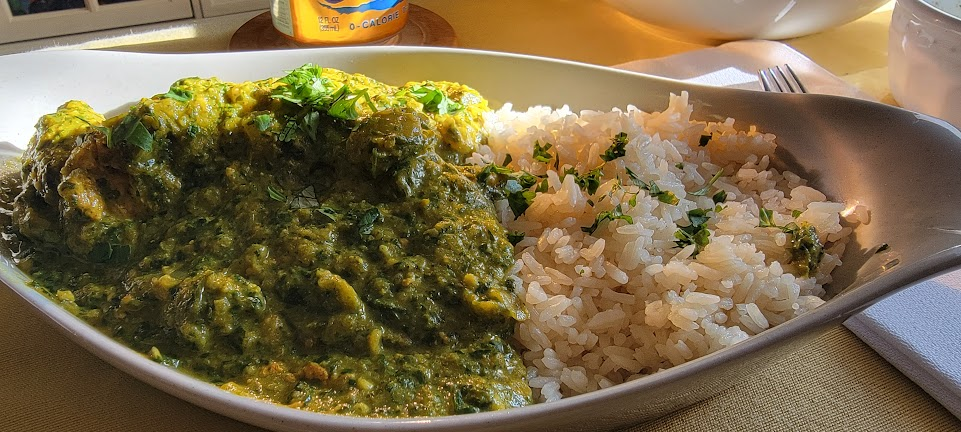

Chicken Saag

Description
A classic Indian dish. Yogurt marinated chicken cooked in a spiced, creamy, spinach curry sauce and served with basmati rice
Serves 2
Prep: 15 minutes
Cook Time: 1 hour
Ingredients
- Ghee
- 2 chicken breasts
- 1/2 cup plain greek yogurt
- 2 tbsp ginger paste
- 2 tbsp garlic paste
- 2-3 tbsp indian chicken mix
- 2-3 tbsp Restaurant Indian Spice Mix
- 1 large yellow onion, diced
- 1 serrano, deseeded and diced
- 10 oz. baby spinach
- splash of stock
- coconut milk
Steps
- Marinade: Mix yogurt, 1 tbsp garlic paste, 1 tbsp ginger paste, and indian chicken mix. Incorporate chicken and let rest in fridge at least 30 minutes, but preferably 6 hours (no more than 8)
- Set oven to preheat on broil
- Add ghee to heavy ceramic pot on stove and set heat to medium to medium-high. Brown chicken in batches, not cooking all the way, just adding color. Transition to rack set on sheet tray and put in oven once preheated. Cook until internal temp reaches 160F - will finish in pot
- In same pot, cook onions until well browned and caramalized, then add serrano and cook for another 2-3 minutes. Add remaining garlic and ginger paste and cook 1-2 minutes. Add Restaurant Spice Mix (add more ghee if too dry) and temper spices 1 minute, but don't let burn!
- Add a splash of stock, scrape pan, and then add all the spinach, turn heat to low, and cover. Stir every minute until spinach is well reduced - 4 to 5 minutes.
- Once completly wilted, blend with immersion blender until creamy and has no large chunks of onion or spinach.
- Salt to taste, then add cooked chicken and any juices into pot.
- Add in coconut milk until desired consistensy/taste.
- Serve over basmati rice with a garnish of coriander and some homemade naan for scooping!